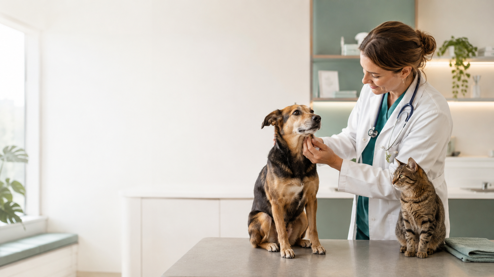
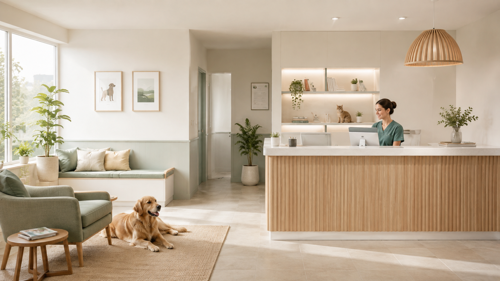
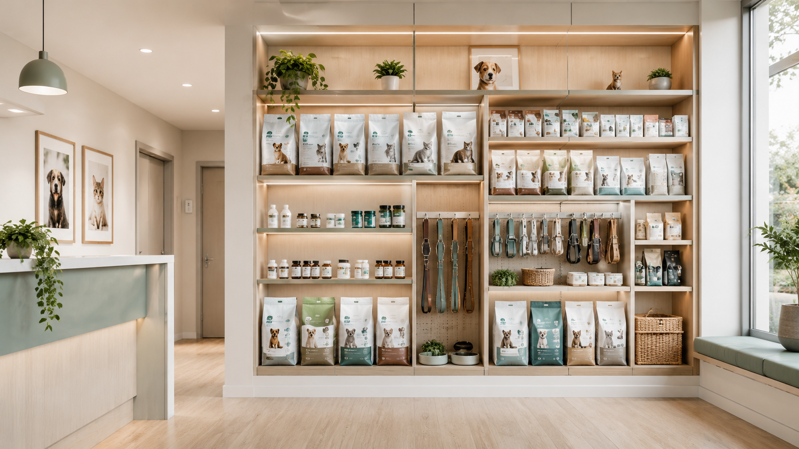
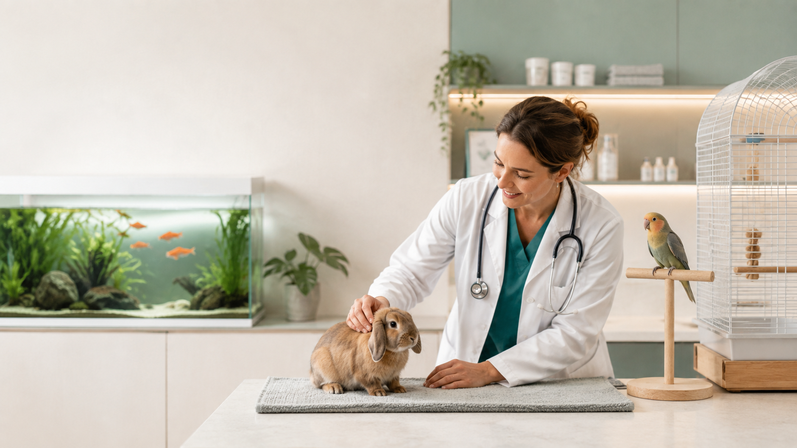

01
Atención veterinaria integral
Un punto claro para conocer la atención veterinaria disponible y encontrar el canal adecuado para consultar.
Veterinaria en Montevideo
Atención veterinaria y soluciones para el cuidado de tus animales en Montevideo.
Demo conceptual privada · información factual limitada a datos públicamente verificados.

Todo más claro
Una estructura simple para ordenar la atención y la oferta pública de La Cruz sin obligar a la persona a buscar entre distintas plataformas.
Un punto claro para conocer la atención veterinaria disponible y encontrar el canal adecuado para consultar.
Espacio preparado para organizar alimentos, accesorios y otras soluciones para el cuidado cotidiano de mascotas.
Categoría pública identificada que puede desarrollarse con más detalle una vez confirmado el catálogo actual.
Arquitectura preparada para comunicar esta categoría sin asumir actos médicos o servicios concretos no confirmados.

Menos fricción
La web está pensada para que una visita desde Google, Maps o Instagram no termine en otra búsqueda. Ubicación, contacto y oferta aparecen donde la persona los necesita.

Una web que puede crecer
La primera versión puede concentrarse en contacto, sedes y claridad. La arquitectura queda preparada para sumar catálogo, pedidos o tienda online si eso encaja con la operativa real del negocio.

Oferta organizada
Las categorías se presentan de manera modular. Si La Cruz confirma nuevos servicios, productos o áreas, pueden incorporarse sin rediseñar toda la experiencia.
Ubicación confirmada
Av. 8 de Octubre 3560, Unión, Montevideo
Reputación existente
El diseño reserva un espacio específico para valoración pública y opiniones externas, pero ninguna cifra debe mostrarse sin una verificación reciente.
Cuando se verifiquen las cifras actuales, esta sección puede mostrar valoración, volumen de opiniones y acceso a reseñas externas sin inventar testimonios.
Sobre La Cruz
Veterinaria La Cruz cuenta con presencia pública en Montevideo y comunica una propuesta de atención veterinaria integral junto con productos y categorías para el cuidado de animales. Esta demo ordena esa información en un canal propio, rápido y fácil de usar.
Importante: las imágenes de esta demo son conceptuales y no representan al equipo ni las instalaciones reales.
Preguntas frecuentes
La interfaz está preparada para dirigir la consulta al canal oficial que La Cruz confirme. En esta demo el CTA permanece sin conectar hasta verificar el WhatsApp correspondiente.
La dirección confirmada utilizada en esta demo es Av. 8 de Octubre 3560, Unión, Montevideo. La arquitectura permite incorporar otras sedes una vez verificadas.
La web final puede ofrecer llamada, WhatsApp y otros canales oficiales desde cada sede. Los números no confirmados no se publican en esta versión.
La información pública utilizada para esta demo menciona atención veterinaria integral y oferta comercial para mascotas, incluyendo alimentos y productos, peces/acuarios, aves y pequeños animales. El detalle final debe validarse con el negocio.
Contacto rápido
La versión final puede llevarte al canal correcto en un toque, evitando búsquedas adicionales y números equivocados.